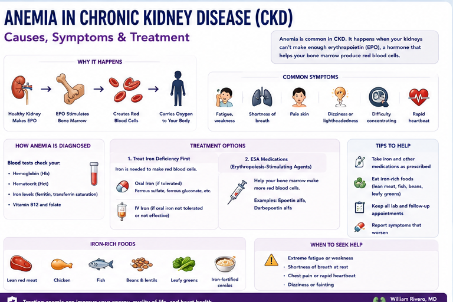
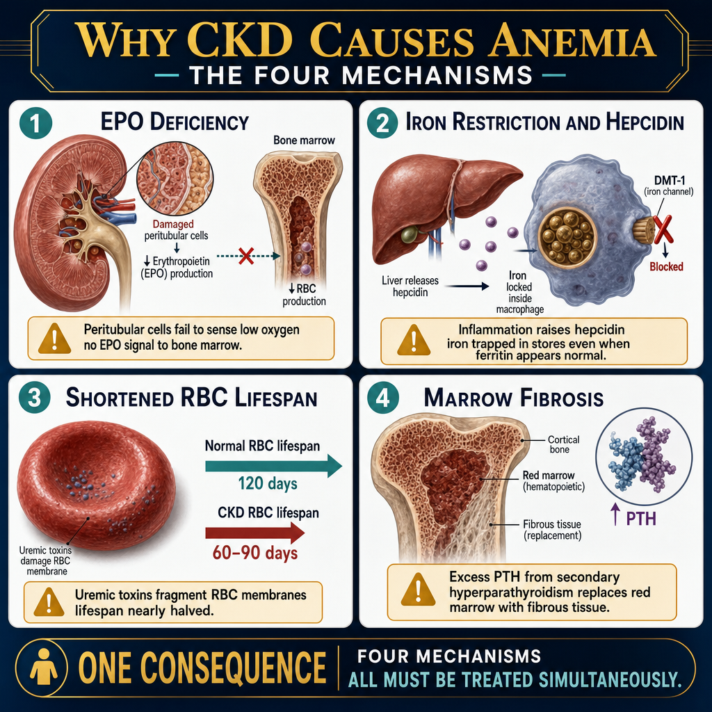
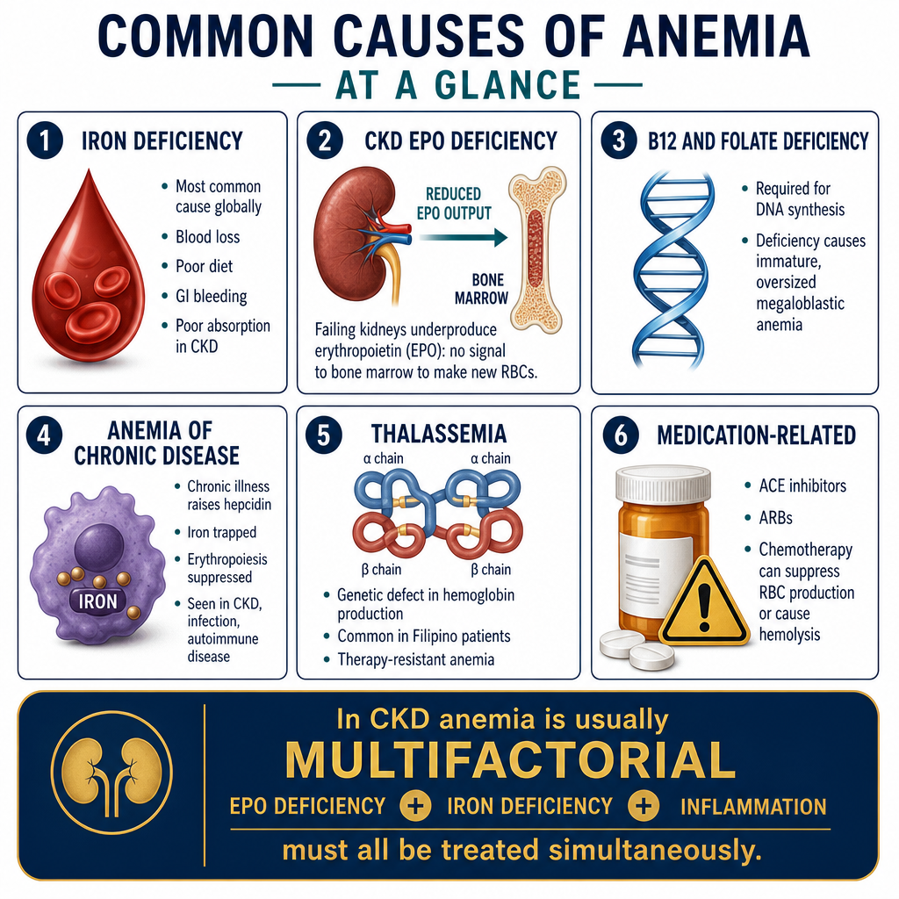
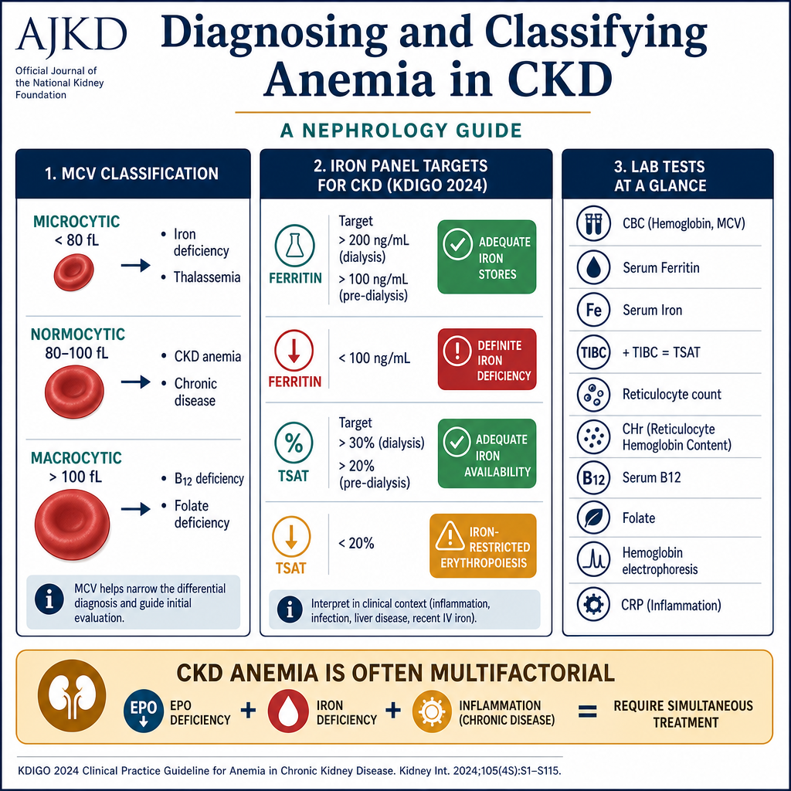
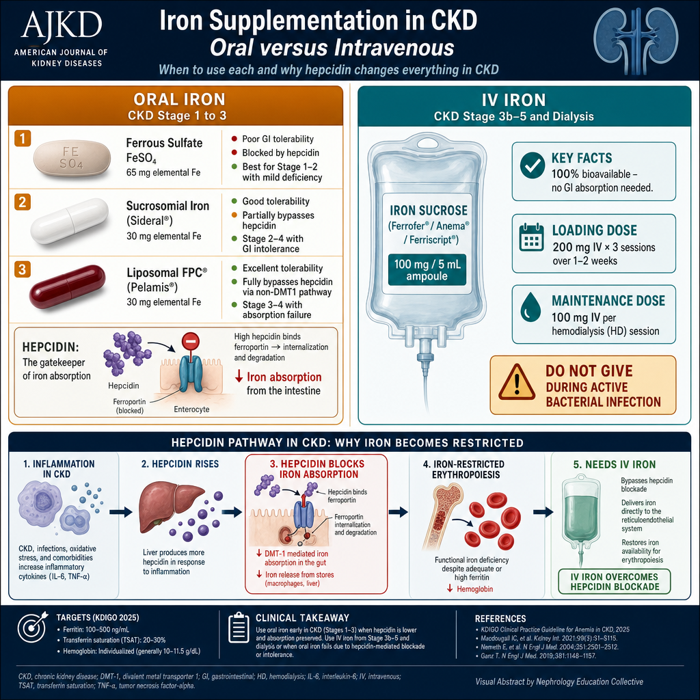
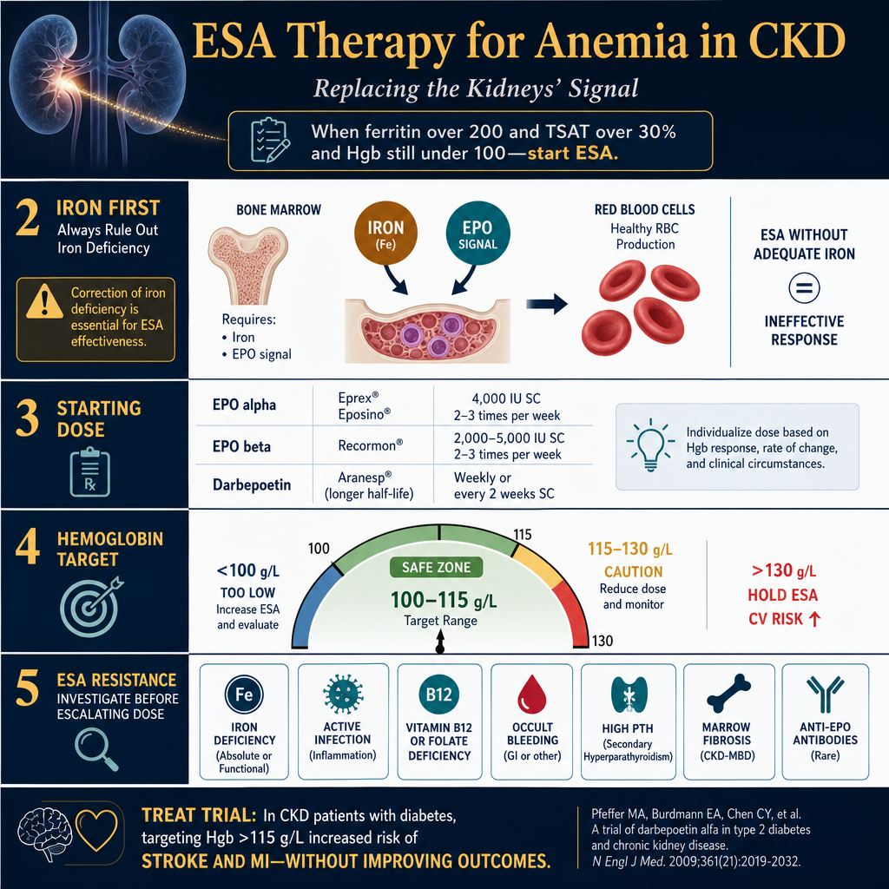
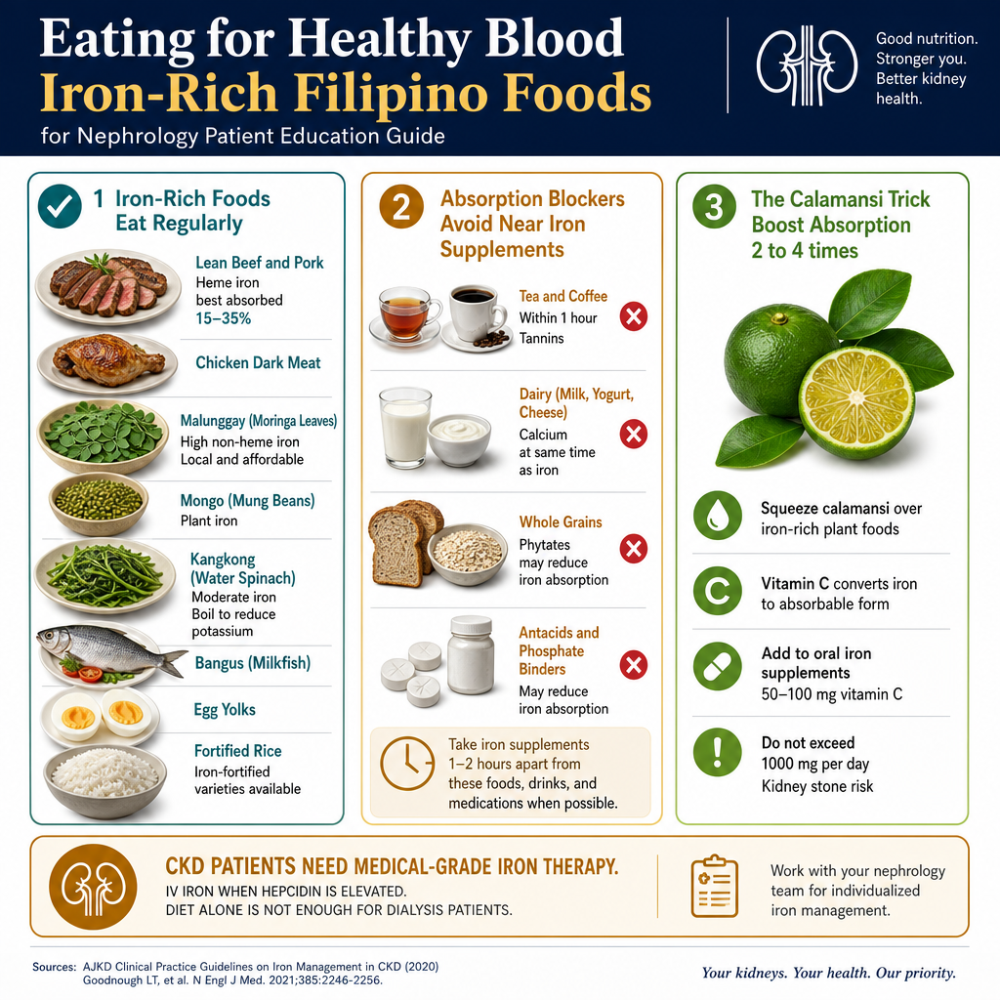
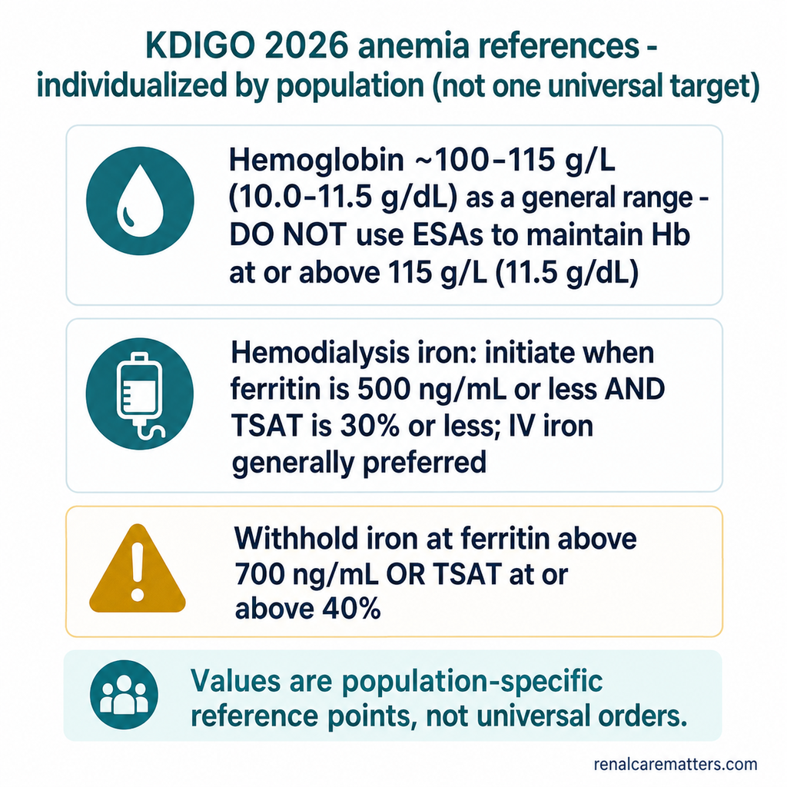

What Is Anemia — and Why Does It Matter?Ano ang Anemia — at Bakit Ito Mahalaga?Unsa ang Anemia — ug Nganong Importante Kini? Ano ing Anemia — at Bakit Ini Importante?

Anemia means your blood does not carry enough oxygen to meet your body's needs. Red blood cells contain hemoglobin — the protein that picks up oxygen in the lungs and delivers it to every organ. When hemoglobin falls too low, every organ suffers — especially the heart (which works harder) and the kidneys (which need oxygen to maintain filtration).Ang anemia ay nangangahulugang ang inyong dugo ay hindi nagdadala ng sapat na oxygen para matugunan ang pangangailangan ng katawan. Ang mga pulang selula ng dugo ay naglalaman ng hemoglobin — ang protina na kumukuha ng oxygen sa baga at naghahatid nito sa bawat organo. Kapag masyadong bumaba ang hemoglobin, nagdurusa ang bawat organo — lalo na ang puso (na nagtatrabaho nang mas malakas) at ang mga bato (na nangangailangan ng oxygen upang mapanatili ang pagsasala).Ang anemia nagpasabot nga ang inyong dugo dili magdala og igo nga oxygen aron matubag ang mga pangangailangan sa lawas. Ang mga pulang selula sa dugo adunay hemoglobin — ang protina nga mokuha og oxygen sa baga ug maghatod niini sa matag organo. Kon mubaba kaayo ang hemoglobin, mag-antos ang matag organo — ilabi na ang kasingkasing (nga nagbuhat og mas kusog) ug ang mga kidney (nga nanginahanglan og oxygen aron mapadayon ang pagsala). Ing anemia ya nangangahulugang ing inyu daya ya ali nagdadala ning sapat a oxygen para matugunan ing pangangailangan ning bangkî. Ing deng pulang selula ning daya ya naglalaman ning hemoglobin — ing protina a kumukuha ning oxygen king baga at naghahatid nini king bawat organo. Nung masyadong bumaba ing hemoglobin, nagdurusa ing bawat organo — lalo a ing pusu (a nagtatrabaho nang mas malakas) at ing deng batu (a nangangailangan ning oxygen upang mapanatili ing pagsasala).
Anemia is defined as hemoglobin below 130 g/L in men and below 120 g/L in women. In CKD patients, the KDIGO 2024 target is 100–115 g/L — a range that balances oxygen delivery with the risk of excess hemoglobin causing hypertension and thrombosis.Ang anemia ay tinukoy bilang hemoglobin na mas mababa sa 130 g/L sa mga lalaki at mas mababa sa 120 g/L sa mga babae. Sa mga pasyenteng may CKD, ang target ng KDIGO 2024 ay 100–115 g/L — isang saklaw na nagbabalanse ng paghahatid ng oxygen sa panganib ng labis na hemoglobin na nagdudulot ng hypertension at thrombosis.Ang anemia gihulagway ingon nga hemoglobin nga ubos sa 130 g/L sa mga lalaki ug ubos sa 120 g/L sa mga babaye. Sa mga pasyente nga may CKD, ang target sa KDIGO 2024 mao ang 100–115 g/L — usa ka saklaw nga nagbalansi sa paghatod sa oxygen ug sa peligro sa sobrang hemoglobin nga hinungdan sa hypertension ug thrombosis. Ing anemia ya tinukoy bilang hemoglobin a mas mababa king 130 g/L king deng lalaki at mas mababa king 120 g/L king deng babae. King deng pasyenteng atin CKD, ing target ning KDIGO 2024 ya 100–115 g/L — metung a saklaw a nagbabalanse ning paghahatid ning oxygen king panganib ning labis a hemoglobin a nagdudulot ning hypertension at thrombosis.

This illustration shows the four main reasons damaged kidneys lead to anemia: too little EPO hormone, iron locked away by hepcidin, red blood cells that wear out faster, and bone marrow that makes fewer cells.
CKD anemia is multifactorial — EPO deficiency, iron-restricted erythropoiesis, and shortened RBC survival all contribute simultaneously. All three must be addressed.Ang anemia sa CKD ay may maraming dahilan — ang kakulangan ng EPO, ang iron-restricted erythropoiesis, at ang pinaikling buhay ng RBC ay sabay-sabay na nag-aambag. Ang lahat ng tatlo ay dapat tugunan.Ang anemia sa CKD adunay daghang hinungdan — ang kakulang sa EPO, ang iron-restricted erythropoiesis, ug ang gipamubo nga kinabuhi sa RBC nagambibit tanan sa dungan. Ang tanan nga tulo kinahanglan nga sulbaron. Ing anemia king CKD ya atin dacal a dahilan — ing kakulangan ning EPO, ing iron-restricted erythropoiesis, at ing pinaikling biye ning RBC ya sabay-sabay a nag-aambag. Ing amin ning tatlo ya dapat tugunan.
Symptoms of anemiaMga sintomas ng anemiaMga sintomas sa anemia Deng sintomas ning anemia
Persistent fatigue and weakness even with rest, shortness of breath on mild exertion, palpitations or rapid heartbeat, pale skin, pale inner eyelids (conjunctival pallor), dizziness or light-headedness on standing, difficulty concentrating, cold intolerance, and reduced exercise capacity.Patuloy na pagod at kahinaan kahit may pahinga, igsi ng hininga sa magaang na pagsisikap, palpitasyon o mabilis na tibok ng puso, maputlang balat, maputlang panloob na talukap ng mata (conjunctival pallor), pagkahilo o pag-alinlangan sa pagtayo, kahirapan sa konsentrasyon, hindi pagtitiis sa lamig, at nabawasang kakayahan sa ehersisyo.Padayon nga pagkaluya ug kahuyang bisan may pahinga, kahapdos sa paghinga sa magaan nga paningkamot, palpitasyon o paspas nga tibok sa kasingkasing, mapulaw nga panit, mapulaw nga sulod sa talukap sa mata (conjunctival pallor), pagkahilo o pag-alingawngaw sa pagtindog, kalisod sa konsentrasyon, dili pagpas-an sa kabugnaw, ug nabuwang nga kakayahan sa ehersisyo. Patuloy a pagod at kahinaan kahit atin pahinga, igsi ning hininga king magaang a pagsisikap, palpitasyon o mabilis a tibok ning pusu, maputlang balat, maputlang panloob a talukap ning mata (conjunctival pallor), pagkahilo o pag-alinlangan king pagtayo, kahirapan king konsentrasyon, ali pagtitiis king lamig, at nabawasang kakayahan king ehersisyo.
Why anemia is dangerous in CKDBakit mapanganib ang anemia sa CKDNganong delikado ang anemia sa CKD Bakit mapanganib ing anemia king CKD
The heart compensates for anemia by beating faster and pumping more blood — chronic compensation causes left ventricular hypertrophy and eventual heart failure. In dialysis patients, anemia is independently associated with increased cardiovascular mortality, hospitalizations, and reduced quality of life.Ang puso ay nagbabayad para sa anemia sa pamamagitan ng mas mabilis na pagtibok at pagpump ng mas maraming dugo — ang patuloy na pagbabayad ay nagdudulot ng left ventricular hypertrophy at kalaunan ay pagpalya ng puso. Sa mga pasyenteng nasa dialysis, ang anemia ay independyenteng nauugnay sa pagtaas ng cardiovascular mortality, mga hospitalisasyon, at nabawasang kalidad ng buhay.Ang kasingkasing nagbayad alang sa anemia pinaagi sa mas paspas nga pagtibok ug pagpump sa mas daghang dugo — ang kronikong pagbayad nagdala sa left ventricular hypertrophy ug sa katapusan ay pagpaluya sa kasingkasing. Sa mga pasyente nga nag-dialysis, ang anemia adunay independyenteng kalabotan sa dugang cardiovascular mortality, mga hospitalisasyon, ug nabuwang nga kalidad sa kinabuhi. Ing pusu ya nagbabayad para king anemia king pamamagitan ning mas mabilis a pagtibok at pagpump ning mas dacal a daya — ing patuloy a pagbabayad ya nagdudulot ning left ventricular hypertrophy at kalaunan ya pagpalya ning pusu. King deng pasyenteng nasa dialysis, ing anemia ya independyenteng nauugnay king pagtaas ning cardiovascular mortality, deng hospitalisasyon, at nabawasang kalidad ning biye.
Common Causes of AnemiaMga Karaniwang Sanhi ng AnemiaMga Kasagarang Hinungdan sa Anemia Deng Karaniwang Sanhi ning Anemia

This infographic outlines the common causes of anemia, including iron deficiency, low EPO from kidney disease, vitamin B12 or folate deficiency, anemia of chronic disease, thalassemia, and certain medications.
Iron deficiencyKakulangan ng ironKakulang sa iron Kakulangan ning iron
Most common cause globally. Blood loss (menstruation, GI bleeding), poor dietary intake, or poor absorption (gastritis, celiac).Pinaka-karaniwang sanhi sa buong mundo. Pagkawala ng dugo (regla, GI bleeding), mahinang pagkain, o mahinang pagsipsip (gastritis, celiac).Labing kasagarang hinungdan sa tibuok kalibutan. Pagkawala sa dugo (regla, GI bleeding), gamay nga pagkaon, o gamay nga pagsuyop (gastritis, celiac). Pinaka-karaniwang sanhi king buong mundo. Pagkaala ning daya (regla, GI bleeding), mahinang pamangan, o mahinang pagsipsip (gastritis, celiac).
CKD / EPO deficiencyCKD / Kakulangan ng EPOCKD / Kakulang sa EPO CKD / Kakulangan ning EPO
Failing kidneys produce insufficient erythropoietin — the hormone that signals bone marrow to make red blood cells.Ang mga bagsak na bato ay gumagawa ng kulang na erythropoietin — ang hormon na nagbibigay-senyal sa bone marrow na gumawa ng mga pulang selula ng dugo.Ang mga napakyas nga kidney nagpatunghag kulang nga erythropoietin — ang hormon nga nag-signal sa bone marrow nga maghimo og mga pulang selula sa dugo. Ing deng bagsak a batu ya gumagawa ning kulang a erythropoietin — ing hormon a nagbibigay-senyal king bone marrow a gumawa ning deng pulang selula ning daya.
B12 / Folate deficiencyKakulangan ng B12 / FolateKakulang sa B12 / Folate Kakulangan ning B12 / Folate
Required for DNA synthesis in red cell precursors. Deficiency causes large, immature cells (megaloblastic anemia).Kinakailangan para sa DNA synthesis sa mga precursor ng pulang selula. Ang kakulangan ay nagdudulot ng malalaki, hindi pa ganap na mga selula (megaloblastic anemia).Gikinahanglan alang sa DNA synthesis sa mga precursor sa pulang selula. Ang kakulang nagdala sa dagko, hilaw pa nga mga selula (megaloblastic anemia). Kinakailangan para king DNA synthesis king deng precursor ning pulang selula. Ing kakulangan ya nagdudulot ning malalaki, ali pa ganap a deng selula (megaloblastic anemia).
Anemia of chronic diseaseAnemia ng kronikong sakitAnemia sa kroniko nga sakit Anemia ning kronikong sakit
Inflammation from chronic illness (infection, autoimmune, cancer) sequesters iron and suppresses erythropoiesis via hepcidin.Ang pamamaga mula sa kronikong sakit (impeksyon, autoimmune, kanser) ay nagtatago ng iron at pumipigil sa erythropoiesis sa pamamagitan ng hepcidin.Ang pamamaga gikan sa kroniko nga sakit (impeksyon, autoimmune, kanser) nagtago sa iron ug nagpugong sa erythropoiesis pinaagi sa hepcidin. Ing pamamaga mula king kronikong sakit (impeksyon, autoimmune, kanser) ya nagtatago ning iron at pumipigil king erythropoiesis king pamamagitan ning hepcidin.
ThalassemiaThalassemiaThalassemia Thalassemia
Genetic disorder causing defective hemoglobin production. Common in Southeast Asia including the Philippines. Causes microcytic, hypochromic anemia resistant to iron therapy.Genetic disorder na nagdudulot ng depektibong produksyon ng hemoglobin. Karaniwan sa Timog-silangang Asya kasama ang Pilipinas. Nagdudulot ng microcytic, hypochromic anemia na lumalaban sa iron therapy.Genetic disorder nga nagdala sa depektibong produksyon sa hemoglobin. Kasagarang makita sa Timog-sidlakang Asya lakip ang Pilipinas. Nagdala sa microcytic, hypochromic anemia nga nagbatok sa iron therapy. Genetic disorder a nagdudulot ning depektibong produksyon ning hemoglobin. Karaniwan king Timog-silangang Asya kasama ing Pilipinas. Nagdudulot ning microcytic, hypochromic anemia a lumalaban king iron therapy.
Medication-relatedKaugnay sa gamotMay kalabotan sa tambal Kaugnay king gamut
ACE inhibitors, ARBs, immunosuppressants, and certain antibiotics can suppress red cell production or cause hemolysis.Ang ACE inhibitors, ARBs, immunosuppressants, at ilang antibiotics ay maaaring pigilan ang produksyon ng pulang selula o magdulot ng hemolysis.Ang ACE inhibitors, ARBs, immunosuppressants, ug pipila ka antibiotics mahimong pugngan ang produksyon sa pulang selula o makapahimong hemolysis. Ing ACE inhibitors, ARBs, immunosuppressants, at ilang antibiotics ya maaaring pigilan ing produksyon ning pulang selula o magdulot ning hemolysis.
Most CKD anemia is multifactorialAng karamihang anemia sa CKD ay may maraming dahilanAng kadaghanan sa anemia sa CKD adunay daghang hinungdan Ing karamihang anemia king CKD ya atin dacal a dahilan
In a CKD or dialysis patient, anemia is rarely from a single cause. The most common combination is EPO deficiency + iron deficiency + chronic inflammation — all three must be addressed simultaneously. Treating EPO deficiency alone without ensuring iron adequacy is a common cause of ESA therapy failure.Sa isang pasyenteng may CKD o nasa dialysis, ang anemia ay bihirang manggaling sa isang dahilan lamang. Ang pinakakaraniwang kombinasyon ay kakulangan ng EPO + kakulangan ng iron + kronikong pamamaga — ang lahat ng tatlo ay dapat tugunan nang sabay-sabay. Ang paggamot lamang sa kakulangan ng EPO nang hindi tinitiyak ang sapat na iron ay isang karaniwang sanhi ng pagkabigo ng ESA therapy.Sa usa ka pasyente nga may CKD o nag-dialysis, ang anemia panagsa ra gikan sa usa ka hinungdan lamang. Ang labing kasagarang kombinasyon mao ang kakulang sa EPO + kakulang sa iron + kroniko nga pamamaga — ang tanan nga tulo kinahanglan nga sulbaron sa dungan. Ang pagtambal lamang sa kakulang sa EPO nga wala masiguro ang sapat nga iron usa ka kasagarang hinungdan sa pagkapakyas sa ESA therapy. King metung a pasyenteng atin CKD o nasa dialysis, ing anemia ya bihirang manggaling king metung a dahilan lamang. Ing pinakakaraniwang kombinasyon ya kakulangan ning EPO + kakulangan ning iron + kronikong pamamaga — ing amin ning tatlo ya dapat tugunan nang sabay-sabay. Ing paggamut lamang king kakulangan ning EPO nang ali tinitiyak ing sapat a iron ya metung a karaniwang sanhi ning pagkabigo ning ESA therapy.
Why CKD Causes Anemia — The MechanismBakit Nagdudulot ng Anemia ang CKD — Ang MekanismoNganong Nagdala og Anemia ang CKD — Ang Mekanismo Bakit Nagdudulot ning Anemia ing CKD — Ing Mekanismo
Erythropoietin (EPO) deficiency — the primary driverKakulangan ng Erythropoietin (EPO) — ang pangunahing dahilanKakulang sa Erythropoietin (EPO) — ang panguna nga hinungdan Kakulangan ning Erythropoietin (EPO) — ing pangunahing dahilan
The peritubular cells of the kidney sense oxygen tension and produce erythropoietin in response to hypoxia. As kidney tissue is lost in CKD, EPO production falls proportionally. Without EPO, the bone marrow receives no signal to produce new red blood cells — existing cells age and die without replacement, causing progressive anemia.Ang mga peritubular cell ng bato ay nakakakita ng oxygen tension at gumagawa ng erythropoietin bilang tugon sa hypoxia. Habang nawawala ang tissue ng bato sa CKD, ang produksyon ng EPO ay bumababa nang proporsyonal. Nang wala ang EPO, ang bone marrow ay walang natatanggap na senyal para gumawa ng bagong mga pulang selula ng dugo — ang mga kasalukuyang selula ay tumatanda at namamatay nang walang kapalit, na nagdudulot ng progresibong anemia.Ang mga peritubular cell sa kidney nakabati sa oxygen tension ug nagpatunghag erythropoietin isip tubag sa hypoxia. Samtang mawala ang tissue sa kidney sa CKD, ang produksyon sa EPO nag-ubos sa proporsyon. Kung wala ang EPO, ang bone marrow walay madawat nga signal aron maghimo og bag-ong mga pulang selula sa dugo — ang mga naanaa nga selula nag-edad ug namatay nga walay kapuli, nagdala sa progresibong anemia. Ing deng peritubular cell ning batu ya nakakakita ning oxygen tension at gumagawa ning erythropoietin bilang tugon king hypoxia. Habang nawawala ing tissue ning batu king CKD, ing produksyon ning EPO ya bumababa nang proporsyonal. Nang ala ing EPO, ing bone marrow ya alang natatanggap a senyal para gumawa ning bagong deng pulang selula ning daya — ing deng kasalukuyang selula ya tumatanda at namamatay nang alang kapalit, a nagdudulot ning progresibong anemia.
Iron deficiency — absolute and functionalKakulangan ng iron — ganap at functionalKakulang sa iron — absoluto ug functional Kakulangan ning iron — ganap at functional
CKD patients lose iron through the dialysis circuit (blood remaining in tubing), frequent blood draws, and GI bleeding from uremic platelet dysfunction. Additionally, inflammation raises hepcidin — a hormone that blocks iron release from stores even when ferritin appears adequate. This "iron-restricted erythropoiesis" requires IV iron, not oral iron.Ang mga pasyenteng may CKD ay nawawalan ng iron sa pamamagitan ng dialysis circuit (dugo na nananatili sa tubing), madalas na pagkuha ng dugo, at GI bleeding mula sa uremic platelet dysfunction. Bukod dito, ang pamamaga ay nagpapataas ng hepcidin — isang hormon na humahadlang sa pagpapalabas ng iron mula sa mga imbakan kahit na tila sapat ang ferritin. Ang "iron-restricted erythropoiesis" na ito ay nangangailangan ng IV iron, hindi oral iron.Ang mga pasyente nga may CKD nawad-an og iron pinaagi sa dialysis circuit (dugo nga nagpabilin sa tubing), kanunay nga pagkuha sa dugo, ug GI bleeding gikan sa uremic platelet dysfunction. Dugang pa, ang pamamaga nagpataas sa hepcidin — usa ka hormon nga nagpugong sa pagpagawas sa iron gikan sa mga imbakan bisan kung tila sapat ang ferritin. Kining "iron-restricted erythropoiesis" nanginahanglan og IV iron, dili oral iron. Ing deng pasyenteng atin CKD ya nawawalan ning iron king pamamagitan ning dialysis circuit (daya a nananatili king tubing), madalas a pagkuha ning daya, at GI bleeding mula king uremic platelet dysfunction. Bukod dini, ing pamamaga ya nagpapataas ning hepcidin — metung a hormon a humahadlang king pagpapalabas ning iron mula king deng imbakan kahit a tila sapat ing ferritin. Ing "iron-restricted erythropoiesis" a ini ya nangangailangan ning IV iron, ali oral iron.
Shortened red blood cell survivalPinaikling buhay ng pulang selula ng dugoGipamubo nga kinabuhi sa pulang selula sa dugo Pinaikling biye ning pulang selula ning daya
Uremic toxins damage red blood cell membranes, shortening their lifespan from the normal 120 days to as little as 60–90 days. Even with adequate EPO and iron, the bone marrow cannot produce cells fast enough to replace those being destroyed — worsening the anemia.Ang mga uremic toxin ay nagpapasama ng mga lamad ng pulang selula ng dugo, pinaikli ang kanilang buhay mula sa normal na 120 araw hanggang 60–90 araw lamang. Kahit may sapat na EPO at iron, ang bone marrow ay hindi makapaggawa ng mga selula nang mabilis upang mapalitan ang mga nasisira — nagpapalubha ng anemia.Ang mga uremic toxin nagdaot sa mga lamad sa pulang selula sa dugo, gipamubo ang ilang kinabuhi gikan sa normal nga 120 ka adlaw ngadto sa 60–90 ka adlaw lamang. Bisan may igo nga EPO ug iron, ang bone marrow dili makahimo og mga selula nga paspas aron mapuli ang mga ginadaot — nagpagrabe sa anemia. Ing deng uremic toxin ya nagpapasama ning deng lamad ning pulang selula ning daya, pinaikli ing kanilang biye mula king normal a 120 aldo anggang 60–90 aldo lamang. Kahit atin sapat a EPO at iron, ing bone marrow ya ali makapaggawa ning deng selula nang mabilis upang mapalitan ing deng nasisira — nagpapalubha ning anemia.
Secondary hyperparathyroidism — bone marrow fibrosisSecondary hyperparathyroidism — fibrosis ng bone marrowSecondary hyperparathyroidism — fibrosis sa bone marrow Secondary hyperparathyroidism — fibrosis ning bone marrow
Severely elevated PTH causes marrow fibrosis (osteitis fibrosa cystica) — replacing the normal marrow where red cells are made with fibrous tissue. This form of anemia responds poorly to EPO and iron — it requires control of PTH through active vitamin D, phosphate binders, and sometimes parathyroidectomy.Ang matinding pagtaas ng PTH ay nagdudulot ng marrow fibrosis (osteitis fibrosa cystica) — pinapalitan ang normal na marrow kung saan ginagawa ang mga pulang selula ng fibrous tissue. Ang anyang ito ay mahinang tumutugon sa EPO at iron — nangangailangan ito ng kontrol sa PTH sa pamamagitan ng active vitamin D, phosphate binders, at minsan parathyroidectomy.Ang grabeng pagtaas sa PTH nagdala sa marrow fibrosis (osteitis fibrosa cystica) — nagpuli sa normal nga marrow diin gihimo ang mga pulang selula pinaagi sa fibrous tissue. Kining matang sa anemia mahinay motubag sa EPO ug iron — nanginahanglan kini og kontrol sa PTH pinaagi sa active vitamin D, phosphate binders, ug usahay parathyroidectomy. Ing matinding pagtaas ning PTH ya nagdudulot ning marrow fibrosis (osteitis fibrosa cystica) — pinapalitan ing normal a marrow nung saan ginagawa ing deng pulang selula ning fibrous tissue. Ing anyang ini ya mahinang tumutugon king EPO at iron — nangangailangan ini ning kontrol king PTH king pamamagitan ning active vitamin D, phosphate binders, at misan parathyroidectomy.
Diagnosing and Classifying AnemiaPag-diagnose at Pag-uuri ng AnemiaPag-diagnose ug Pag-klase sa Anemia Pag-diagnose at Pag-uuri ning Anemia

This infographic explains how anemia in kidney disease is diagnosed and classified, using red cell size (MCV) categories and iron blood tests such as ferritin and transferrin saturation (TSAT).
| TestPagsusuriPagsusiha Pagsusuri | What it identifiesAno ang natutukoy nitoUnsa ang natino niini Ano ing natutukoy nini | Key values to noteMahahalagang halaga na dapat tandaanMga importanteng kantidad nga hinumdoman Mahahalagang halaga a dapat tandaan |
|---|---|---|
| Hemoglobin (Hgb)Hemoglobin (Hgb)Hemoglobin (Hgb) Hemoglobin (Hgb) | Severity of anemiaKalubhaan ng anemiaGrabe nga anemia Kalubhaan ning anemia | CKD target 100–115 g/L. <80 = severe anemia requiring urgent evaluation.Target sa CKD 100–115 g/L. <80 = malubhang anemia na nangangailangan ng agarang pagsusuri.Target sa CKD 100–115 g/L. <80 = grabeng anemia nga nanginahanglan og dinalian nga pagsusiha. Target king CKD 100–115 g/L. <80 = malubhang anemia a nangangailangan ning agarang pagsusuri. |
| MCV (Mean Cell Volume)MCV (Mean Cell Volume)MCV (Mean Cell Volume) MCV (Mean Cell Volume) | Type of anemia by cell sizeUri ng anemia ayon sa laki ng selulaMatang sa anemia sumala sa gidak-on sa selula Uri ning anemia ayon king laki ning selula | <80 fL = microcytic (iron deficiency, thalassemia); >100 fL = macrocytic (B12/folate deficiency); 80–100 = normocytic (CKD, chronic disease, mixed)<80 fL = microcytic (kakulangan ng iron, thalassemia); >100 fL = macrocytic (kakulangan ng B12/folate); 80–100 = normocytic (CKD, kronikong sakit, halo-halo)<80 fL = microcytic (kakulang sa iron, thalassemia); >100 fL = macrocytic (kakulang sa B12/folate); 80–100 = normocytic (CKD, kroniko nga sakit, halo-halo) <80 fL = microcytic (kakulangan ning iron, thalassemia); >100 fL = macrocytic (kakulangan ning B12/folate); 80–100 = normocytic (CKD, kronikong sakit, halo-halo) |
| Serum ferritinSerum ferritinSerum ferritin Serum ferritin | Iron storesImbakan ng ironImbakan sa iron Imbakan ning iron | CKD/dialysis target >200 ng/mL. <100 = definite iron deficiency. 100–200 = borderline; check TSAT.Target sa CKD/dialysis >200 ng/mL. <100 = tiyak na kakulangan ng iron. 100–200 = borderline; suriin ang TSAT.Target sa CKD/dialysis >200 ng/mL. <100 = siguradong kakulang sa iron. 100–200 = borderline; susihon ang TSAT. Target king CKD/dialysis >200 ning/mL. <100 = tiyak a kakulangan ning iron. 100–200 = borderline; suriin ing TSAT. |
| TSAT (Transferrin Saturation)TSAT (Transferrin Saturation)TSAT (Transferrin Saturation) TSAT (Transferrin Saturation) | Functional iron availability for erythropoiesisFunctional na availability ng iron para sa erythropoiesisFunctional nga availability sa iron alang sa erythropoiesis Functional a availability ning iron para king erythropoiesis | CKD target >30%. <20% = iron-restricted erythropoiesis — IV iron indicated even if ferritin is "normal".Target sa CKD >30%. <20% = iron-restricted erythropoiesis — IV iron ay ipinahiwatig kahit "normal" ang ferritin.Target sa CKD >30%. <20% = iron-restricted erythropoiesis — IV iron gipaila bisan "normal" ang ferritin. Target king CKD >30%. <20% = iron-restricted erythropoiesis — IV iron ya ipinahiwatig kahit "normal" ing ferritin. |
| Reticulocyte count + CHrReticulocyte count + CHrReticulocyte count + CHr Reticulocyte count + CHr | Bone marrow response; iron adequacy for erythropoiesisTugon ng bone marrow; kasapatan ng iron para sa erythropoiesisTubag sa bone marrow; kasiguroan sa iron alang sa erythropoiesis Tugon ning bone marrow; kasapatan ning iron para king erythropoiesis | Low reticulocytes = insufficient production. CHr (reticulocyte hemoglobin content) <29 pg = iron-restricted erythropoiesis.Mababang reticulocytes = kulang na produksyon. CHr (reticulocyte hemoglobin content) <29 pg = iron-restricted erythropoiesis.Ubos nga reticulocytes = kulang nga produksyon. CHr (reticulocyte hemoglobin content) <29 pg = iron-restricted erythropoiesis. Mababang reticulocytes = kulang a produksyon. CHr (reticulocyte hemoglobin content) <29 pg = iron-restricted erythropoiesis. |
| Serum B12 and folateSerum B12 at folateSerum B12 ug folate Serum B12 at folate | Macrocytic/megaloblastic anemiaMacrocytic/megaloblastic anemiaMacrocytic/megaloblastic anemia Macrocytic/megaloblastic anemia | B12 <200 pg/mL = deficiency. Low folate with megaloblastic picture requires oral folic acid 1–5 mg daily.B12 <200 pg/mL = kakulangan. Mababang folate na may megaloblastic na larawan ay nangangailangan ng oral folic acid 1–5 mg araw-araw.B12 <200 pg/mL = kakulang. Ubos nga folate nga adunay megaloblastic nga hulagway nanginahanglan og oral folic acid 1–5 mg matag adlaw. B12 <200 pg/mL = kakulangan. Mababang folate a atin megaloblastic a larawan ya nangangailangan ning oral folic acid 1–5 mg aldo-aldo. |
| Hemoglobin electrophoresisHemoglobin electrophoresisHemoglobin electrophoresis Hemoglobin electrophoresis | Thalassemia and hemoglobin variantsThalassemia at mga variant ng hemoglobinThalassemia ug mga variant sa hemoglobin Thalassemia at deng variant ning hemoglobin | Essential when microcytic anemia does not respond to iron therapy. Common in Filipino patients — alpha and beta thalassemia trait are prevalent.Mahalaga kapag ang microcytic anemia ay hindi tumutugon sa iron therapy. Karaniwan sa mga pasyenteng Pilipino — ang alpha at beta thalassemia trait ay laganap.Hinungdanon kon ang microcytic anemia dili motubag sa iron therapy. Kasagarang makita sa mga pasyenteng Pilipino — ang alpha ug beta thalassemia trait kaylap. Importante nung ing microcytic anemia ya ali tumutugon king iron therapy. Karaniwan king deng pasyenteng Pilipino — ing alpha at beta thalassemia trait ya laganap. |
| CRP / hsCRPCRP / hsCRPCRP / hsCRP CRP / hsCRP | Inflammation — suppresses iron utilizationPamamaga — pinipigilan ang paggamit ng ironPamamaga — nagpugong sa paggamit sa iron Pamamaga — pinipigilan ing paggamit ning iron | Elevated CRP + low TSAT + high ferritin = anemia of chronic disease / iron-restricted erythropoiesis. IV iron + treat underlying inflammation.Mataas na CRP + mababang TSAT + mataas na ferritin = anemia ng kronikong sakit / iron-restricted erythropoiesis. IV iron + gamutin ang pinagbabatayan na pamamaga.Taas nga CRP + ubos nga TSAT + taas nga ferritin = anemia sa kroniko nga sakit / iron-restricted erythropoiesis. IV iron + tambalon ang nagpapailalom nga pamamaga. Matas a CRP + mababang TSAT + matas a ferritin = anemia ning kronikong sakit / iron-restricted erythropoiesis. IV iron + gamutin ing pinagbabatayan a pamamaga. |
Iron Supplementation — Oral vs IntravenousPagdadagdag ng Iron — Oral kumpara sa IntravenousPagdugang sa Iron — Oral batok sa Intravenous Pagdadagdag ning Iron — Oral kumpara king Intravenous

This infographic compares oral iron tablets, often used in earlier kidney disease, with intravenous (IV) iron given through a vein for more advanced kidney disease and dialysis.
Oral iron — overviewOral iron — pangkalahatang-ideyaOral iron — kinatibuk-an Oral iron — pangkalahatang-ideya
Oral iron remains the first-line choice for pre-dialysis CKD Stage 1–3 with mild-to-moderate iron deficiency. Absorption is limited in CKD (hepcidin elevation, reduced gastric acid) — typically only 10–15% of the elemental iron dose is absorbed, compared to 25–35% in healthy individuals. Multiple formulations are now available in the Philippines with different elemental iron content, tolerability profiles, and mechanisms of absorption. See comparison table below.Ang oral iron ay nananatiling pangunahing pagpipilian para sa pre-dialysis CKD Stage 1–3 na may banayad hanggang katamtamang kakulangan ng iron. Ang pagsipsip ay limitado sa CKD (pagtaas ng hepcidin, nabawasang gastric acid) — karaniwang 10–15% lamang ng elemental iron dose ang nasipsip, kumpara sa 25–35% sa mga malusog na tao. Maraming formulation ang available na sa Pilipinas na may iba't ibang nilalaman ng elemental iron, profile ng tolerability, at mekanismo ng pagsipsip. Tingnan ang talahanayan ng paghahambing sa ibaba.Ang oral iron nagpabilin nga pangunahing kapilian alang sa pre-dialysis CKD Stage 1–3 nga adunay banayad hangtod katamtamang kakulang sa iron. Ang pagsuyop limitado sa CKD (pagtaas sa hepcidin, nabuwang gastric acid) — kasagarang 10–15% lamang sa elemental iron dose ang nasuyop, kumpara sa 25–35% sa mga malusog nga tawo. Daghang formulation ang available na sa Pilipinas nga adunay lain-laing sulod sa elemental iron, profile sa tolerability, ug mekanismo sa pagsuyop. Tan-awa ang talahanayan sa pagtandi sa ubos. Ing oral iron ya nananatiling pangunahing pagpipilian para king pre-dialysis CKD Stage 1–3 a atin banayad anggang katamtamang kakulangan ning iron. Ing pagsipsip ya limitado king CKD (pagtaas ning hepcidin, nabawasang gastric acid) — karaniwang 10–15% lamang ning elemental iron dose ing nasipsip, kumpara king 25–35% king deng malusog a tao. Dacal a formulation ing available a king Pilipinas a atin iba't ibang nilalaman ning elemental iron, profile ning tolerability, at mekanismo ning pagsipsip. Tingnan ing talahanayan ning paghahambing king ibaba.
IV iron — preferred in CKD Stage 3b–5 and dialysisIV iron — mas mainam sa CKD Stage 3b–5 at dialysisIV iron — mas gipili sa CKD Stage 3b–5 ug dialysis IV iron — mas mainam king CKD Stage 3b–5 at dialysis
IV iron sucrose is the standard in Philippine dialysis centers, available locally as Ferrofer, Anema, and Ferriscript (all iron sucrose 100 mg/5 mL ampoules — available at Philippine dialysis centers). All are iron sucrose complex formulations and are clinically equivalent for standard dosing. IV iron bypasses absorption barriers, delivers iron directly to storage and bone marrow, and is significantly more effective than oral iron in CKD Stage 3–5 and dialysis. Standard dosing: loading 200 mg IV × 3 sessions (over 1–2 weeks); maintenance 100 mg per HD session once iron targets are reached. Infuse slowly over 15–30 minutes diluted in 100 mL normal saline. Monitor for hypersensitivity reactions — observe patient for 30 minutes post-infusion. Do not administer if ferritin >500 ng/mL with active infection or inflammation.Ang IV iron sucrose ang pamantayan sa mga dialysis center sa Pilipinas, available nang lokal bilang Ferrofer, Anema, at Ferriscript (lahat ay iron sucrose 100 mg/5 mL ampoule). Lahat ay naglalaman ng iron sucrose complex at clinically equivalent para sa karaniwang dosis. Ang IV iron ay lumalampas sa mga hadlang sa pagsipsip, naghahatid ng iron nang direkta sa imbakan at bone marrow, at mas epektibo kaysa oral iron sa CKD Stage 3–5 at dialysis. Karaniwang dosis: loading 200 mg IV × 3 sessions (sa loob ng 1–2 linggo); maintenance 100 mg bawat HD session kapag naabot na ang mga target ng iron. Mag-infuse nang dahan-dahan sa loob ng 15–30 minuto na natunaw sa 100 mL normal saline. Bantayan ang mga reaksyon ng hypersensitivity — obserbahan ang pasyente sa loob ng 30 minuto pagkatapos ng infusion. Huwag ibigay kung ang ferritin >500 ng/mL na may aktibong impeksyon o pamamaga.Ang IV iron sucrose mao ang pamantayan sa mga dialysis center sa Pilipinas, available nang lokal isip Ferrofer, Anema, ug Ferriscript (tanan iron sucrose 100 mg/5 mL ampoule). Tanan adunay iron sucrose complex ug clinically equivalent alang sa standard nga dosis. Ang IV iron milabang sa mga babag sa pagsuyop, naghatod sa iron direkta sa imbakan ug bone marrow, ug labi ka epektibo kaysa oral iron sa CKD Stage 3–5 ug dialysis. Kasagarang dosis: loading 200 mg IV × 3 sessions (sulod sa 1–2 ka semana); maintenance 100 mg sa matag HD session kon naabot na ang mga target sa iron. Mag-infuse nga hinay sulod sa 15–30 minuto nga natunaw sa 100 mL normal saline. Bantayan ang mga reaksyon sa hypersensitivity — obserbahan ang pasyente sulod sa 30 minuto human sa infusion. Ayaw ihatag kon ang ferritin >500 ng/mL nga adunay aktibong impeksyon o pamamaga. Ing IV iron sucrose ing pamantayan king deng dialysis center king Pilipinas, available nang lokal bilang Ferrofer, Anema, at Ferriscript (amin ya iron sucrose 100 mg/5 mL ampoule). Amin ya naglalaman ning iron sucrose complex at clinically equivalent para king karaniwang dosis. Ing IV iron ya lumalampas king deng hadlang king pagsipsip, naghahatid ning iron nang direkta king imbakan at bone marrow, at mas epektibo kaysa oral iron king CKD Stage 3–5 at dialysis. Karaniwang dosis: loading 200 mg IV × 3 sessions (king loob ning 1–2 lutu); maintenance 100 mg bawat HD session nung naabot a ing deng target ning iron. Mag-infuse nang dahan-dahan king loob ning 15–30 minuto a natunaw king 100 mL normal saline. Bantayan ing deng reaksyon ning hypersensitivity — obserbahan ing pasyente king loob ning 30 minuto kapabanuan ning infusion. Eka ibigay nung ing ferritin >500 ning/mL a atin aktibong impeksyon o pamamaga.
Oral Iron Formulations — New vs. ConventionalMga Formulation ng Oral Iron — Bago kumpara sa TradisyonalMga Formulation sa Oral Iron — Bag-o batok sa Tradisyonal Deng Formulation ning Oral Iron — Bago kumpara king Tradisyonal
Not all oral iron supplements are equal. Conventional ferrous sulfate is inexpensive but poorly tolerated and poorly absorbed in CKD. Newer formulations — sucrosomial iron (Sideral) and liposomal/ferric pyrophosphate (Pelamis) — offer higher bioavailability, significantly fewer GI side effects, and novel absorption pathways that partially bypass hepcidin blockade.Hindi lahat ng oral iron supplement ay pantay. Ang conventional ferrous sulfate ay mura ngunit mahirap tiisin at mahirap masipsip sa CKD. Ang mga bagong formulation — sucrosomial iron (Sideral) at liposomal/ferric pyrophosphate (Pelamis) — ay nag-aalok ng mas mataas na bioavailability, mas kaunting GI side effects, at mga bagong landas ng pagsipsip na bahagyang lumalampas sa hepcidin blockade.Dili tanan nga oral iron supplement managsama. Ang conventional ferrous sulfate barato apan lisod tiiron ug lisod masuyop sa CKD. Ang mga bag-ong formulation — sucrosomial iron (Sideral) ug liposomal/ferric pyrophosphate (Pelamis) — nagtanyag og mas taas nga bioavailability, labi ka gamay nga GI side effects, ug mga bag-ong dalan sa pagsuyop nga bahin nga milabang sa hepcidin blockade. Ali amin ning oral iron supplement ya pantay. Ing conventional ferrous sulfate ya mura ngarud mahirap tiisin at mahirap masipsip king CKD. Ing deng bagong formulation — sucrosomial iron (Sideral) at liposomal/ferric pyrophosphate (Pelamis) — ya nag-aalok ning mas matas a bioavailability, mas kaunting GI side effects, at deng bagong landas ning pagsipsip a bahagyang lumalampas king hepcidin blockade.
| FormulationFormulationFormulation Formulation | Brand (PH)Brand (PH)Brand (PH) Brand (PH) | Elemental FeElemental FeElemental Fe Elemental Fe | Absorption mechanismMekanismo ng pagsipsipMekanismo sa pagsuyop Mekanismo ning pagsipsip | GI tolerabilityGI tolerabilityGI tolerability GI tolerability | CKD rolePapel sa CKDPapel sa CKD Papel king CKD |
|---|---|---|---|---|---|
| Ferrous sulfate (FeSO₄) | Feosol, Ferobin, generics | 65 mg per 325 mg tab | DMT-1 transporter (duodenum). Requires acidic gastric environment. Blocked by hepcidin and inflammation.DMT-1 transporter (duodenum). Nangangailangan ng maasim na kapaligiran sa tiyan. Hinahadlangan ng hepcidin at pamamaga.DMT-1 transporter (duodenum). Nanginahanglan og acidic nga kapaligiran sa tiyan. Gipugngan sa hepcidin ug pamamaga. DMT-1 transporter (duodenum). Nangangailangan ning maasim a kapaligiran king tiyan. Hinahadlangan ning hepcidin at pamamaga. | PoorMahirapDili maayo Mahirap — constipation, nausea, black stools common. GI side effects lead to non-adherence in ~30–40%.constipation, pagduduwal, itim na dumi ay karaniwan. Ang GI side effects ay nagdudulot ng hindi pagsunod sa ~30–40%.constipation, pagduwal, itom nga tae kasagarang mahitabo. Ang GI side effects nagdala sa dili pagsunod sa ~30–40%. constipation, pagduduwal, itim a dumi ya karaniwan. Ing GI side effects ya nagdudulot ning ali pagsunod king ~30–40%. | First-line in Stage 1–3 mild deficiency. Limited utility in Stage 3b–5 due to absorption barriers. Inexpensive.Pangunahing pagpipilian sa Stage 1–3 na banayad na kakulangan. Limitadong silbi sa Stage 3b–5 dahil sa mga hadlang sa pagsipsip. Mura.Pangunahing kapilian sa Stage 1–3 banayad nga kakulang. Limitado ang gamit sa Stage 3b–5 tungod sa mga babag sa pagsuyop. Barato. Pangunahing pagpipilian king Stage 1–3 a banayad a kakulangan. Limitadong silbi king Stage 3b–5 dahil king deng hadlang king pagsipsip. Mura. |
| Ferrous gluconate / fumarate | Fergon, Ferro-folic generics | 36 mg (gluconate) / 33 mg (fumarate) per tab | Same DMT-1 pathway as FeSO₄. Lower elemental iron per dose than sulfate.Parehong DMT-1 pathway gaya ng FeSO₄. Mas mababang elemental iron bawat dosis kaysa sulfate.Pareho nga DMT-1 pathway sama sa FeSO₄. Mas ubos nga elemental iron sa matag dosis kaysa sulfate. Parehong DMT-1 pathway gaya ning FeSO₄. Mas mababang elemental iron bawat dosis kaysa sulfate. | ModerateKatamtamanKatamtaman Katamtaman — slightly better tolerated than sulfate due to lower elemental iron per dose.bahagyang mas madaling tiisin kaysa sulfate dahil sa mas mababang elemental iron bawat dosis.gamay nga mas sayon tiiron kaysa sulfate tungod sa mas ubos nga elemental iron sa matag dosis. bahagyang mas madaling tiisin kaysa sulfate dahil king mas mababang elemental iron bawat dosis. | Alternative to FeSO₄ when GI side effects are dose-limiting. Comparable efficacy.Alternatibo sa FeSO₄ kapag ang GI side effects ay dose-limiting. Katulad na bisa.Alternatibo sa FeSO₄ kon ang GI side effects dose-limiting. Katumbas nga epekto. Alternatibo king FeSO₄ nung ing GI side effects ya dose-limiting. Katulad a bisa. |
| Sucrosomial iron (ferric pyrophosphate encapsulated in phospholipid + sucrose ester matrix) |
Sideral (Pharma Nord / local distributors) 30 mg elemental Fe capsule |
30 mg per capsule | Absorbed via both DMT-1 and a novel transcellular pathway through enterocytes — partially bypasses the hepcidin-DMT1 blockade seen in CKD. Does not require gastric acid activation.Nasisisip sa pamamagitan ng parehong DMT-1 at isang bagong transcellular pathway sa pamamagitan ng mga enterocyte — bahagyang lumalampas sa hepcidin-DMT1 blockade na nakikita sa CKD. Hindi nangangailangan ng gastric acid activation.Nasuyop pinaagi sa DMT-1 ug usa ka bag-ong transcellular pathway pinaagi sa mga enterocyte — bahin nga milabang sa hepcidin-DMT1 blockade nga makita sa CKD. Wala nagkinahanglan og gastric acid activation. Nasisisip king pamamagitan ning parehong DMT-1 at metung a bagong transcellular pathway king pamamagitan ning deng enterocyte — bahagyang lumalampas king hepcidin-DMT1 blockade a nakikita king CKD. Ali nangangailangan ning gastric acid activation. | GoodMabutiMaayo Mabuti — phospholipid matrix protects GI mucosa. Significantly fewer side effects than FeSO₄. Can be taken with food.ang phospholipid matrix ay nagpoprotekta sa GI mucosa. Mas kaunting side effects kaysa FeSO₄. Maaaring inumin kasama ang pagkain.ang phospholipid matrix nagpanalipod sa GI mucosa. Labi ka gamay nga side effects kaysa FeSO₄. Mahimong inumon uban sa pagkaon. ing phospholipid matrix ya nagpoprotekta king GI mucosa. Mas kaunting side effects kaysa FeSO₄. Maaaring inumin kasama ing pamangan. | Emerging role in CKD Stage 2–4 where hepcidin-mediated absorption is impaired. RCTs show non-inferiority to IV iron in non-dialysis CKD for mild-moderate deficiency. Higher cost than FeSO₄.Lumalabas na papel sa CKD Stage 2–4 kung saan ang hepcidin-mediated absorption ay may kapansanan. Ang mga RCT ay nagpapakita ng non-inferiority sa IV iron sa non-dialysis CKD para sa banayad hanggang katamtamang kakulangan. Mas mataas na gastos kaysa FeSO₄.Nagtubo nga papel sa CKD Stage 2–4 diin ang hepcidin-mediated absorption may pagkamay-depekto. Ang mga RCT nagpakita og non-inferiority sa IV iron sa non-dialysis CKD alang sa banayad hangtod katamtamang kakulang. Mas taas nga gasto kaysa FeSO₄. Lumalabas a papel king CKD Stage 2–4 nung saan ing hepcidin-mediated absorption ya atin kapansanan. Ing deng RCT ya nagpapakita ning non-inferiority king IV iron king non-dialysis CKD para king banayad anggang katamtamang kakulangan. Mas matas a gastos kaysa FeSO₄. |
| Ferric pyrophosphate citrate — oral / dialysate (liposomal iron formulation) |
Pelamis (oral sachets) Note: Triferic (dialysate FPC) is a related but distinct IV formulation — not the same as oral Pelamis |
Variable by sachet formulation — confirm on package insert | Liposomal encapsulation delivers ferric iron directly to enterocyte membrane — absorbed via a non-DMT1 pathway. Highly resistant to hepcidin blockade. Stable at neutral pH — does not require gastric acid.Ang liposomal encapsulation ay naghahatid ng ferric iron nang direkta sa enterocyte membrane — nasisisip sa pamamagitan ng non-DMT1 pathway. Lubos na lumalaban sa hepcidin blockade. Matatag sa neutral pH — hindi nangangailangan ng gastric acid.Ang liposomal encapsulation naghatod sa ferric iron direkta sa enterocyte membrane — nasuyop pinaagi sa non-DMT1 pathway. Labi ka batok sa hepcidin blockade. Lig-on sa neutral pH — wala nagkinahanglan og gastric acid. Ing liposomal encapsulation ya naghahatid ning ferric iron nang direkta king enterocyte membrane — nasisisip king pamamagitan ning non-DMT1 pathway. Lubos a lumalaban king hepcidin blockade. Matatag king neutral pH — ali nangangailangan ning gastric acid. | ExcellentNapakahusayLabing maayo Napakahusay — minimal GI side effects due to liposomal protection. Can be taken at any time, with or without food.minimal na GI side effects dahil sa liposomal protection. Maaaring inumin anumang oras, may pagkain man o wala.minimal nga GI side effects tungod sa liposomal protection. Mahimong inumon bisan unsang oras, uban o walay pagkaon. minimal a GI side effects dahil king liposomal protection. Maaaring inumin anumang oras, atin pamangan man o ala. | Most promising oral formulation for CKD patients who cannot tolerate conventional iron or have significant hepcidin-mediated absorption failure. Local availability: verify current FDA-PH registration status before prescribing. Higher cost. Emerging evidence in CKD; Phase III data expected 2025–2026.Pinaka-promising na oral formulation para sa mga pasyenteng may CKD na hindi kayang tiisin ang conventional iron o may malaking hepcidin-mediated absorption failure. Lokal na availability: i-verify ang kasalukuyang FDA-PH registration status bago mag-reseta. Mas mataas na gastos. Lumalabas na ebidensya sa CKD; inaasahang Phase III data sa 2025–2026.Labing promising nga oral formulation alang sa mga pasyente nga may CKD nga dili makatiis sa conventional iron o adunay dakong hepcidin-mediated absorption failure. Lokal nga availability: i-verify ang kasamtangang FDA-PH registration status sa wala pa mag-reseta. Mas taas nga gasto. Nagtubo nga ebidensya sa CKD; gipaabut nga Phase III data sa 2025–2026. Pinaka-promising a oral formulation para king deng pasyenteng atin CKD a ali kayang tiisin ing conventional iron o atin malaking hepcidin-mediated absorption failure. Lokal a availability: i-verify ing kasalukuyang FDA-PH registration status bago mag-reseta. Mas matas a gastos. Lumalabas a ebidensya king CKD; inaasahang Phase III data king 2025–2026. |
| Iron sucrose IV (parenteral — reference standard) |
Ferrofer, Anema, Ferriscript | 100 mg / 5 mL ampoule (20 mg/mL) | Direct IV delivery — 100% bioavailable. No GI absorption required. Bypasses all hepcidin-mediated barriers. Taken up by reticuloendothelial system and released to transferrin.Direktang IV delivery — 100% bioavailable. Hindi kailangan ng GI absorption. Lumalampas sa lahat ng hepcidin-mediated barriers. Kinukuha ng reticuloendothelial system at inilalabas sa transferrin.Direktang IV delivery — 100% bioavailable. Wala kinahanglana nga GI absorption. Milabang sa tanan nga hepcidin-mediated barriers. Gikuha sa reticuloendothelial system ug gipagawas sa transferrin. Direktang IV delivery — 100% bioavailable. Ali kailangan ning GI absorption. Lumalampas king amin ning hepcidin-mediated barriers. Kinukuha ning reticuloendothelial system at inilalabas king transferrin. | N/A (IV) — No GI side effects. Hypersensitivity reaction risk (<1%); observe 30 min post-infusion.Walang GI side effects. Panganib ng hypersensitivity reaction (<1%); obserbahan ng 30 min pagkatapos ng infusion.Walay GI side effects. Peligro sa hypersensitivity reaction (<1%); obserbahan og 30 min human sa infusion. Alang GI side effects. Panganib ning hypersensitivity reaction (<1%); obserbahan ning 30 min kapabanuan ning infusion. | Gold standard for CKD Stage 3b–5 and all dialysis patients. Most effective at replenishing iron stores rapidly. Requires healthcare facility administration.Gold standard para sa CKD Stage 3b–5 at lahat ng pasyenteng nasa dialysis. Pinaka-epektibo sa mabilis na pagpapanumbalik ng mga imbakan ng iron. Nangangailangan ng pamamahala sa pasilidad ng pangangalagang pangkalusugan.Gold standard alang sa CKD Stage 3b–5 ug tanan nga pasyente nga nag-dialysis. Labing epektibo sa paspas nga pagpuno pag-usab sa mga imbakan sa iron. Nanginahanglan og administrasyon sa pasilidad sa pag-atiman sa kahimsog. Gold standard para king CKD Stage 3b–5 at amin ning pasyenteng nasa dialysis. Pinaka-epektibo king mabilis a pagpapanumbalik ning deng imbakan ning iron. Nangangailangan ning pamamahala king pasilidad ning pangangalagang pangkalusugan. |
Practical prescribing guidance — choosing the right oral iron in CKDPraktikal na gabay sa pag-reseta — pagpili ng tamang oral iron sa CKDPraktikal nga giya sa pag-reseta — pagpili sa husto nga oral iron sa CKD Praktikal a gabay king pag-reseta — pagpili ning tamang oral iron king CKD
- CKD Stage 1–2, mild deficiency, no inflammation:CKD Stage 1–2, banayad na kakulangan, walang pamamaga:CKD Stage 1–2, banayad nga kakulang, walay pamamaga: CKD Stage 1–2, banayad a kakulangan, alang pamamaga: Ferrous sulfate 325 mg OD–BID on empty stomach + calamansi juice. Inexpensive, effective if hepcidin not elevated.Ferrous sulfate 325 mg OD–BID sa walang laman na tiyan + katas ng calamansi. Mura, epektibo kung hindi mataas ang hepcidin.Ferrous sulfate 325 mg OD–BID sa walay sulod nga tiyan + katas sa calamansi. Barato, epektibo kon dili taas ang hepcidin. Ferrous sulfate 325 mg OD–BID king alang laman a tiyan + katas ning calamansi. Mura, epektibo nung ali matas ing hepcidin.
- CKD Stage 2–4, GI intolerance to FeSO₄ or suboptimal response:CKD Stage 2–4, hindi matiisin ang FeSO₄ sa GI o suboptimal na tugon:CKD Stage 2–4, dili matiiron ang FeSO₄ sa GI o suboptimal nga tubag: CKD Stage 2–4, ali matiisin ing FeSO₄ king GI o suboptimal a tugon: Sideral (sucrosomial iron) 1 cap OD–BID with food. Better tolerability, partially bypasses hepcidin, suitable for patients who cannot tolerate conventional iron.Sideral (sucrosomial iron) 1 cap OD–BID kasama ang pagkain. Mas madaling tiisin, bahagyang lumalampas sa hepcidin, angkop para sa mga pasyenteng hindi makakatiisin ng conventional iron.Sideral (sucrosomial iron) 1 cap OD–BID uban sa pagkaon. Mas sayon tiiron, bahin nga milabang sa hepcidin, angay alang sa mga pasyente nga dili makatiis sa conventional iron. Sideral (sucrosomial iron) 1 cap OD–BID kasama ing pamangan. Mas madaling tiisin, bahagyang lumalampas king hepcidin, angkop para king deng pasyenteng ali makakatiisin ning conventional iron.
- CKD Stage 3–4, significant hepcidin elevation, absorption failure:CKD Stage 3–4, makabuluhang pagtaas ng hepcidin, kabiguan sa pagsipsip:CKD Stage 3–4, dakong pagtaas sa hepcidin, pagkapakyas sa pagsuyop: CKD Stage 3–4, makabuluhang pagtaas ning hepcidin, kabiguan king pagsipsip: Consider Pelamis (liposomal FPC) sachets — verify local FDA-PH availability before prescribing.Isaalang-alang ang Pelamis (liposomal FPC) sachets — i-verify ang lokal na FDA-PH availability bago mag-reseta.Konsiderahon ang Pelamis (liposomal FPC) sachets — i-verify ang lokal nga FDA-PH availability sa wala pa mag-reseta. Isaalang-alang ing Pelamis (liposomal FPC) sachets — i-verify ing lokal a FDA-PH availability bago mag-reseta.
- CKD Stage 3b–5 and all hemodialysis patients:CKD Stage 3b–5 at lahat ng pasyenteng nasa hemodialysis:CKD Stage 3b–5 ug tanan nga pasyente nga nag-hemodialysis: CKD Stage 3b–5 at amin ning pasyenteng nasa hemodialysis: IV iron sucrose (Ferrofer, Anema, or Ferriscript) — oral iron is largely ineffective at this stage due to iron-restricted erythropoiesis from hepcidin. IV route is standard of care.IV iron sucrose (Ferrofer, Anema, o Ferriscript) — ang oral iron ay halos hindi epektibo sa yugtong ito dahil sa iron-restricted erythropoiesis mula sa hepcidin. Ang IV route ang pamantayan ng pag-aalaga.IV iron sucrose (Ferrofer, Anema, o Ferriscript) — ang oral iron halos dili epektibo sa yugto nga kini tungod sa iron-restricted erythropoiesis gikan sa hepcidin. Ang IV route mao ang pamantayan sa pag-atiman. IV iron sucrose (Ferrofer, Anema, o Ferriscript) — ing oral iron ya halos ali epektibo king yugtong ini dahil king iron-restricted erythropoiesis mula king hepcidin. Ing IV route ing pamantayan ning pag-aalaga.
- Never give IV iron during active bacterial infectionHuwag kailanman magbigay ng IV iron sa panahon ng aktibong impeksyon sa bakteryaAyaw gayud hatagi og IV iron sa panahon sa aktibong impeksyon sa bakterya Eka kailanman magbigay ning IV iron king panahon ning aktibong impeksyon king bakterya — see alert below.tingnan ang alerto sa ibaba.tan-awa ang alerto sa ubos. tingnan ing alerto king ibaba.
Do not give IV iron during active infectionHuwag magbigay ng IV iron sa panahon ng aktibong impeksyonAyaw hatagi og IV iron sa panahon sa aktibong impeksyon Eka magbigay ning IV iron king panahon ning aktibong impeksyon
IV iron should be withheld during active bacterial infection — bacteria thrive on free iron, and IV iron administration during sepsis or bacteremia worsens outcomes. Withhold IV iron until the infection has been treated and resolved (typically at least 2–4 weeks after completing antibiotics and confirming culture negativity).Ang IV iron ay dapat pigilan sa panahon ng aktibong impeksyon sa bakterya — ang mga bakterya ay lumalaki sa libreng iron, at ang pagbibigay ng IV iron sa panahon ng sepsis o bacteremia ay nagpapalala ng mga resulta. Pigilan ang IV iron hanggang ang impeksyon ay nagamot at nalutas na (karaniwang hindi bababa sa 2–4 linggo pagkatapos makumpleto ang mga antibiotics at nakumpirma ang negatibong kultura).Ang IV iron kinahanglan nga pugngan sa panahon sa aktibong impeksyon sa bakterya — ang mga bakterya naglambo sa libre nga iron, ug ang paghatag sa IV iron sa panahon sa sepsis o bacteremia nagpagrabe sa mga resulta. Pugngan ang IV iron hangtod ang impeksyon natambal ug naayo na (kasagarang labing menos 2–4 ka semana human makompleto ang mga antibiotics ug nakumpirma ang negatibong kultura). Ing IV iron ya dapat pigilan king panahon ning aktibong impeksyon king bakterya — ing deng bakterya ya lumalaki king libreng iron, at ing pagbibigay ning IV iron king panahon ning sepsis o bacteremia ya nagpapalala ning deng resulta. Pigilan ing IV iron anggang ing impeksyon ya nagamot at nalutas a (karaniwang ali bababa king 2–4 lutu kapabanuan makumpleto ing deng antibiotics at nakumpirma ing negatibong kultura).
ESA Therapy — Replacing the Kidney's SignalESA Therapy — Pagpapalit sa Signal ng BatoESA Therapy — Pagpuli sa Signal sa Kidney ESA Therapy — Pagpapalit king Signal ning Batu

This infographic introduces ESA therapy — injections that replace the EPO hormone — covering dosing, hemoglobin goals, the risk of raised blood pressure, and when treatment may need to be increased.
When iron stores are adequate (ferritin >200, TSAT >30%) and hemoglobin remains below 100 g/L, erythropoiesis-stimulating agents (ESAs) are initiated to stimulate bone marrow red cell production.Kapag sapat na ang mga imbakan ng iron (ferritin >200, TSAT >30%) at ang hemoglobin ay nananatiling mas mababa sa 100 g/L, ang mga erythropoiesis-stimulating agent (ESA) ay sinimulan upang pukawin ang produksyon ng pulang selula sa bone marrow.Kon igo na ang mga imbakan sa iron (ferritin >200, TSAT >30%) ug ang hemoglobin nagpabilin nga ubos sa 100 g/L, ang mga erythropoiesis-stimulating agent (ESA) gisugdan aron pukawin ang produksyon sa pulang selula sa bone marrow. Nung sapat a ing deng imbakan ning iron (ferritin >200, TSAT >30%) at ing hemoglobin ya nananatiling mas mababa king 100 g/L, ing deng erythropoiesis-stimulating agent (ESA) ya sinimulan upang pukawin ing produksyon ning pulang selula king bone marrow.
Iron first — alwaysIron muna — palagiIron una — kanunay Iron muna — palagi
ESA therapy without adequate iron stores is ineffective and wasteful. The bone marrow needs iron to build hemoglobin in every new red cell. Always ensure ferritin >200 and TSAT >30% before initiating or escalating ESA dose.Ang ESA therapy nang wala sapat na imbakan ng iron ay hindi epektibo at sayang. Ang bone marrow ay nangangailangan ng iron upang bumuo ng hemoglobin sa bawat bagong pulang selula. Palaging tiyaking ferritin >200 at TSAT >30% bago simulan o taasan ang dosis ng ESA.Ang ESA therapy nga walay igo nga imbakan sa iron dili epektibo ug sayang. Ang bone marrow nanginahanglan og iron aron magtukod og hemoglobin sa matag bag-ong pulang selula. Kanunay sigurohon nga ferritin >200 ug TSAT >30% sa wala pa magsugod o magtaas sa dosis sa ESA. Ing ESA therapy nang ala sapat a imbakan ning iron ya ali epektibo at sayang. Ing bone marrow ya nangangailangan ning iron upang bumuo ning hemoglobin king bawat bagong pulang selula. Papirming tiyaking ferritin >200 at TSAT >30% bago simulan o taasan ing dosis ning ESA.
Starting dose and routePanimulang dosis at rutaSinugdanan nga dosis ug ruta Panimulang dosis at ruta
Epoietin alpha — available in the Philippines as Eprex (Janssen) and Eposino (Goodfellow) — is the standard first-line ESA. Dose: 4,000 IU subcutaneously 2–3 times per week (or IV during dialysis). Recormon (Roche) is epoietin beta — a distinct molecular form available in 2,000 IU, 5,000 IU, and 10,000 IU prefilled syringes — and is also used in the Philippines but is not epoietin alpha. Both alpha and beta forms stimulate the same EPO receptor and have comparable clinical efficacy at equivalent doses; however they are not interchangeable unit-for-unit — confirm the specific agent and dose with your nephrologist. Darbepoetin alfa has a longer half-life and can be given weekly or every 2 weeks at lower injection frequency. Start low and titrate — overshoot above 115 g/L increases cardiovascular risk and thrombosis.Epoietin alpha — available sa Pilipinas bilang Eprex (Janssen) at Eposino (Goodfellow) — ang pamantayang pangunahing ESA. Dosis: 4,000 IU subcutaneously 2–3 beses bawat linggo (o IV sa panahon ng dialysis). Ang Recormon (Roche) ay epoietin beta — isang natatanging molecular form na available sa 2,000 IU, 5,000 IU, at 10,000 IU prefilled syringe — at ginagamit din sa Pilipinas ngunit hindi epoietin alpha. Ang parehong alpha at beta form ay nagpapasigla ng parehong EPO receptor at may katulad na klinikal na bisa sa katumbas na dosis; gayunpaman hindi sila maaaring palitan nang unit-for-unit — kumpirmahin ang tiyak na agent at dosis sa inyong nephrologist. Ang darbepoetin alfa ay may mas matagal na half-life at maaaring ibigay lingguhan o bawat 2 linggo sa mas mababang dalas ng iniksyon. Magsimula nang mababa at mag-titrate — ang paglampas sa itaas ng 115 g/L ay nagpapataas ng cardiovascular risk at thrombosis.Epoietin alpha — available sa Pilipinas isip Eprex (Janssen) ug Eposino (Goodfellow) — ang pamantayang pangunahing ESA. Dosis: 4,000 IU subcutaneously 2–3 ka beses sa matag semana (o IV sa panahon sa dialysis). Ang Recormon (Roche) mao ang epoietin beta — usa ka lain nga molecular form nga available sa 2,000 IU, 5,000 IU, ug 10,000 IU prefilled syringe — ug gigamit usab sa Pilipinas apan dili epoietin alpha. Ang alpha ug beta form nagdasig sa pareho nga EPO receptor ug adunay katumbas nga klinikal nga epekto sa katumbas nga dosis; bisan pa dili sila mapuli sa unit-for-unit — kumpirmahon ang espesipikong agent ug dosis sa inyong nephrologist. Ang darbepoetin alfa adunay mas taas nga half-life ug mahimong ihatag matag semana o matag 2 ka semana sa mas ubos nga dalas sa iniksyon. Magsugod nga ubos ug mag-titrate — ang pagsabaw sa ibabaw sa 115 g/L nagpataas sa cardiovascular risk ug thrombosis. Epoietin alpha — available king Pilipinas bilang Eprex (Janssen) at Eposino (Goodfellow) — ing pamantayang pangunahing ESA. Dosis: 4,000 IU subcutaneously 2–3 beses bawat lutu (o IV king panahon ning dialysis). Ing Recormon (Roche) ya epoietin beta — metung a natatanging molecular form a available king 2,000 IU, 5,000 IU, at 10,000 IU prefilled syringe — at ginagamit din king Pilipinas ngarud ali epoietin alpha. Ing parehong alpha at beta form ya nagpapasigla ning parehong EPO receptor at atin katulad a klinikal a bisa king katumbas a dosis; gayunpaman ali sila maaaring palitan nang unit-for-unit — kumpirmahin ing tiyak a agent at dosis king inyu nephrologist. Ing darbepoetin alfa ya atin mas matagal a half-life at maaaring ibigay lingguhan o bawat 2 lutu king mas mababang dalas ning iniksyon. Magsimula nang mababa at mag-titrate — ing paglampas king itaas ning 115 g/L ya nagpapataas ning cardiovascular risk at thrombosis.
Hemoglobin monitoring and targetPagmamasid sa hemoglobin at targetPagbantay sa hemoglobin ug target Pagmamasid king hemoglobin at target
Check hemoglobin monthly. Target is 100–115 g/L — do NOT target higher. If hemoglobin rises above 115 g/L, reduce ESA dose. If hemoglobin rises above 130 g/L, hold ESA temporarily. Higher hemoglobin targets are associated with increased stroke and myocardial infarction risk (TREAT trial).Suriin ang hemoglobin bawat buwan. Ang target ay 100–115 g/L — HUWAG mag-target ng mas mataas. Kung ang hemoglobin ay umaangat nang higit sa 115 g/L, bawasan ang dosis ng ESA. Kung ang hemoglobin ay umaangat nang higit sa 130 g/L, pansamantalang ihinto ang ESA. Ang mas mataas na target ng hemoglobin ay nauugnay sa pagtaas ng panganib ng stroke at myocardial infarction (TREAT trial).Susihon ang hemoglobin matag buwan. Ang target mao ang 100–115 g/L — AYAW mag-target og mas taas. Kon ang hemoglobin mosaka ibabaw sa 115 g/L, bawason ang dosis sa ESA. Kon ang hemoglobin mosaka ibabaw sa 130 g/L, ihunong sa makadiyot ang ESA. Ang mas taas nga mga target sa hemoglobin adunay kalabotan sa dugang peligro sa stroke ug myocardial infarction (TREAT trial). Suriin ing hemoglobin bawat bulan. Ing target ya 100–115 g/L — HUWAG mag-target ning mas matas. Nung ing hemoglobin ya umaangat nang higit king 115 g/L, bawasan ing dosis ning ESA. Nung ing hemoglobin ya umaangat nang higit king 130 g/L, pansamantalang ihinto ing ESA. Ing mas matas a target ning hemoglobin ya nauugnay king pagtaas ning panganib ning stroke at myocardial infarction (TREAT trial).
ESA resistance — investigate before escalating dosePaglaban sa ESA — imbestigahan bago taasan ang dosisPagsukol sa ESA — imbestigahon sa wala pa taason ang dosis Paglaban king ESA — imbestigahan bago taasan ing dosis
If hemoglobin does not rise after 4–8 weeks despite adequate ESA dosing, do not simply increase the dose. Investigate: is iron truly adequate? Is there occult bleeding? Active infection or inflammation? Vitamin B12/folate deficiency? Hyperparathyroidism with marrow fibrosis? Anti-EPO antibodies (rare)? Each cause requires specific treatment, not more ESA.Kung ang hemoglobin ay hindi tumataas pagkatapos ng 4–8 linggo kahit may sapat na dosis ng ESA, huwag basta-basta taasan ang dosis. Imbestigahan: talaga bang sapat ang iron? May nakatagong pagdurugo? Aktibong impeksyon o pamamaga? Kakulangan ng Vitamin B12/folate? Hyperparathyroidism na may marrow fibrosis? Anti-EPO antibodies (bihira)? Ang bawat sanhi ay nangangailangan ng tiyak na paggamot, hindi mas maraming ESA.Kon ang hemoglobin dili mosaka human sa 4–8 ka semana bisan adunay igo nga dosis sa ESA, ayaw lang taason ang dosis. Imbestigahon: tinuod bang igo ang iron? Aduna bay naghisgot nga pagdugo? Aktibong impeksyon o pamamaga? Kakulang sa Vitamin B12/folate? Hyperparathyroidism nga adunay marrow fibrosis? Anti-EPO antibodies (panagsa)? Ang matag hinungdan nanginahanglan og espesipikong pagtambal, dili dugang ESA. Nung ing hemoglobin ya ali tumataas kapabanuan ning 4–8 lutu kahit atin sapat a dosis ning ESA, eka basta-basta taasan ing dosis. Imbestigahan: talaga bang sapat ing iron? Atin nakatagong pagdurugo? Aktibong impeksyon o pamamaga? Kakulangan ning Vitamin B12/folate? Hyperparathyroidism a atin marrow fibrosis? Anti-EPO antibodies (bihira)? Ing bawat sanhi ya nangangailangan ning tiyak a paggamut, ali mas dacal a ESA.
Eating for Healthy Blood — Iron-Rich Filipino FoodsPagkain para sa Malusog na Dugo — Mga Pagkaing May Mataas na Iron sa PilipinasPagkaon alang sa Malusog nga Dugo — Mga Pagkaon nga Dato sa Iron sa Pilipinas Pamangan para king Malusog a Daya — Deng Pagkaing Atin Matas a Iron king Pilipinas

This infographic highlights iron-rich Filipino foods such as malunggay, bangus, kangkong, mongo, and lean meat, shows what to avoid, and explains how a squeeze of calamansi can help your body absorb more iron.
Iron-rich foods — eat regularlyMga pagkaing mayaman sa iron — kainin nang regularMga pagkaon nga dato sa iron — kaonon nga regular Deng pagkaing mayaman king iron — kainin nang regular
- Lean beef and pork — heme iron (best absorbed, 15–35%)Manipis na baka at baboy — heme iron (pinakamadaling masipsip, 15–35%)Payat nga baka ug baboy — heme iron (labing madaling masuyop, 15–35%) Manipis a baka at baboy — heme iron (pinakamadaling masipsip, 15–35%)
- Chicken and turkey dark meatMadilim na karne ng manok at paboItom nga unod sa manok ug pabo Madilim a karne ning manok at pabo
- Malunggay (moringa) leaves — high non-heme iron; local and affordableDahon ng malunggay (moringa) — mataas na non-heme iron; lokal at abot-kayaDahon sa malunggay (moringa) — taas nga non-heme iron; lokal ug barato Dahon ning malunggay (moringa) — matas a non-heme iron; lokal at abot-kaya
- Mongo beans (mung beans) — plant-based ironMongo (mung beans) — iron mula sa halamanMongo (mung beans) — iron gikan sa tanum Mongo (mung beans) — iron mula king halaman
- Kangkong — moderate iron; boil to reduce potassium if neededKangkong — katamtamang iron; pakuluan upang mabawasan ang potassium kung kinakailanganKangkong — katamtamang iron; pabukalon aron mabawasan ang potassium kon kinahanglan Kangkong — katamtamang iron; pakuluan upang mabawasan ing potassium nung kinakailangan
- Fortified rice and cerealsFortified na bigas at cerealFortified nga bugas ug cereal Fortified a bigas at cereal
- Egg yolks — moderate iron contentPula ng itlog — katamtamang nilalaman ng ironPula sa itlog — katamtamang sulod sa iron Pula ning itlog — katamtamang nilalaman ning iron
- Bangus (milkfish) and other fishBangus at iba pang isdaBangus ug uban pang isda Bangus at iba pang isda
Reduce these — they block iron absorptionBawasan ito — humahadlang ang mga ito sa pagsipsip ng ironBawasan kini — nagpugong kini sa pagsuyop sa iron Bawasan ini — humahadlang ing deng ini king pagsipsip ning iron
- Tea and coffee within 1 hour of iron-rich meals (tannins)Tsaa at kape sa loob ng 1 oras pagkatapos ng mga pagkaing mayaman sa iron (tannins)Tsaa ug kape sulod sa 1 ka oras human sa mga pagkaon nga dato sa iron (tannins) Tsaa at kape king loob ning 1 oras kapabanuan ning deng pagkaing mayaman king iron (tannins)
- Calcium-rich foods (dairy) taken at the same time as iron supplementsMga pagkaing mayaman sa calcium (gatas) na kinukuha nang sabay sa mga iron supplementMga pagkaon nga dato sa calcium (gatas) nga gikuha nga dungan sa mga iron supplement Deng pagkaing mayaman king calcium (gatas) a kinukuha nang sabay king deng iron supplement
- Whole grain phytates when taken with iron supplementsMga phytate sa buong butil kapag kinuha kasama ang mga iron supplementMga phytate sa tibuok butil kon gikuha uban sa mga iron supplement Deng phytate king buong butil nung kinuha kasama ing deng iron supplement
- Antacids, phosphate binders taken simultaneously with oral ironMga antacid, phosphate binder na kinukuha nang sabay sa oral ironMga antacid, phosphate binder nga gikuha nga dungan sa oral iron Deng antacid, phosphate binder a kinukuha nang sabay king oral iron
- Excessive processed foods that lack nutritional densityLabis na mga processed na pagkain na kulang sa nutritional densitySobrang mga processed nga pagkaon nga kulang sa nutritional density Labis a deng processed a pamangan a kulang king nutritional density
Enhance iron absorption with vitamin CPalakasin ang pagsipsip ng iron gamit ang vitamin CPalig-ona ang pagsuyop sa iron gamit ang vitamin C Palakasin ing pagsipsip ning iron gamit ing vitamin C
Vitamin C (ascorbic acid) converts non-heme iron (from plants) from ferric (Fe³⁺) to ferrous (Fe²⁺) form — the absorbable form. Squeeze calamansi or dalandan over iron-rich plant foods at mealtime. A small amount of vitamin C (50–100 mg) with oral iron supplements can increase absorption by 2–4 fold. Do not exceed 1,000 mg vitamin C supplementation — high doses increase urinary oxalate and kidney stone risk.Ang Vitamin C (ascorbic acid) ay nagko-convert ng non-heme iron (mula sa mga halaman) mula sa ferric (Fe³⁺) patungong ferrous (Fe²⁺) — ang masisipsip na anyo. Pigain ang calamansi o dalandan sa mga pagkaing may iron mula sa halaman sa oras ng kain. Ang maliit na halaga ng vitamin C (50–100 mg) kasama ang mga oral iron supplement ay maaaring magpataas ng pagsipsip ng 2–4 beses. Huwag lagpasan ang 1,000 mg ng vitamin C supplementation — ang mataas na dosis ay nagpapataas ng urinary oxalate at panganib ng kidney stone.Ang Vitamin C (ascorbic acid) nagbag-o sa non-heme iron (gikan sa mga tanum) gikan sa ferric (Fe³⁺) ngadto sa ferrous (Fe²⁺) — ang masuyop nga porma. Puga og calamansi o dalandan sa mga pagkaon nga may iron gikan sa tanum sa oras sa pagkaon. Ang gamay nga kantidad sa vitamin C (50–100 mg) uban sa mga oral iron supplement mahimong makapataas sa pagsuyop og 2–4 ka pilo. Ayaw lapasa ang 1,000 mg nga vitamin C supplementation — ang taas nga dosis nagpataas sa urinary oxalate ug peligro sa kidney stone. Ing Vitamin C (ascorbic acid) ya nagko-convert ning non-heme iron (mula king deng halaman) mula king ferric (Fe³⁺) patungong ferrous (Fe²⁺) — ing masisipsip a anyo. Pigain ing calamansi o dalandan king deng pagkaing atin iron mula king halaman king oras ning kain. Ing maliit a halaga ning vitamin C (50–100 mg) kasama ing deng oral iron supplement ya maaaring magpataas ning pagsipsip ning 2–4 beses. Eka lagpasan ing 1,000 mg ning vitamin C supplementation — ing matas a dosis ya nagpapataas ning urinary oxalate at panganib ning kidney stone.
Iron Status Calculator — TSAT & Iron Deficiency ClassifierKalkulador ng Katayuan ng Iron — TSAT at Iron Deficiency ClassifierKalkulador sa Kahimtang sa Iron — TSAT ug Iron Deficiency Classifier Kalkulador ning Katayuan ning Iron — TSAT at Iron Deficiency Classifier
Enter your iron panel results to calculate TSAT and determine your iron deficiency type. Your doctor uses this to decide whether IV iron, oral iron, or no iron therapy is appropriate for you.Ilagay ang inyong mga resulta ng iron panel upang kalkulahin ang TSAT at matukoy ang uri ng inyong kakulangan sa iron. Ginagamit ito ng inyong doktor upang magpasiya kung ang IV iron, oral iron, o walang iron therapy ang angkop para sa inyo.Isulod ang inyong mga resulta sa iron panel aron makalkula ang TSAT ug matino ang matang sa inyong kakulang sa iron. Gigamit kini sa inyong doktor aron magdesisyon kon ang IV iron, oral iron, o walay iron therapy ang angay alang kaninyo. Ilagay ing inyu deng resulta ning iron panel upang kalkulahin ing TSAT at matukoy ing uri ning inyu kakulangan king iron. Ginagamit ini ning inyu doktor upang magpasiya nung ing IV iron, oral iron, o alang iron therapy ing angkop para king inyo.
⚕ TSAT = (Serum Iron ÷ TIBC) × 100. Ferritin is an acute phase reactant — elevated by inflammation, infection, or malignancy independent of iron stores. Classification per KDIGO 2024. This tool is for educational guidance only — iron therapy decisions require physician assessment.
Treatment Targets for CKD-Related AnemiaMga Target sa Paggamot ng Anemia na Kaugnay sa CKDMga Target sa Pagtambal sa Anemia nga May Kalabotan sa CKD Deng Target king Paggamut ning Anemia a Kaugnay king CKD

200 ng/mL dialysis, TSAT >30% dialysis, CHr >29 pg" style="border-radius:12px;display:block;width:100%;height:auto;">This infographic summarizes the international KDIGO treatment targets for anemia in kidney disease, including the recommended hemoglobin range and iron level goals for patients on dialysis.
| ParameterParameterParameter Parameter | KDIGO 2024 TargetTarget ng KDIGO 2024Target sa KDIGO 2024 Target ning KDIGO 2024 | Action if below targetAksyon kung nasa ibaba ng targetAksyon kon ubos sa target Aksyon nung nasa ibaba ning target | Action if above targetAksyon kung nasa itaas ng targetAksyon kon ibabaw sa target Aksyon nung nasa itaas ning target |
|---|---|---|---|
| HemoglobinHemoglobinHemoglobin Hemoglobin | 100–115 g/L | Evaluate iron, initiate/increase ESA; investigate resistanceSuriin ang iron, simulan/taasan ang ESA; imbestigahan ang paglabanSusihon ang iron, sugdan/taason ang ESA; imbestigahon ang pagsukol Suriin ing iron, simulan/taasan ing ESA; imbestigahan ing paglaban | Reduce/hold ESA; investigate polycythemia causesBawasan/ihinto ang ESA; imbestigahan ang mga sanhi ng polycythemiaBawason/ihunong ang ESA; imbestigahon ang mga hinungdan sa polycythemia Bawasan/ihinto ing ESA; imbestigahan ing deng sanhi ning polycythemia |
| Serum ferritinSerum ferritinSerum ferritin Serum ferritin | >200 ng/mL (dialysis) / >100 (pre-dialysis) | IV iron supplementation (dialysis) or oral iron (pre-dialysis)IV iron supplementation (dialysis) o oral iron (pre-dialysis)IV iron supplementation (dialysis) o oral iron (pre-dialysis) IV iron supplementation (dialysis) o oral iron (pre-dialysis) | >500 with active inflammation — avoid IV iron; ferritin may be falsely elevated>500 na may aktibong pamamaga — iwasan ang IV iron; ang ferritin ay maaaring maling mataas>500 nga adunay aktibong pamamaga — likayi ang IV iron; ang ferritin mahimong sayop nga taas >500 a atin aktibong pamamaga — iwasan ing IV iron; ing ferritin ya maaaring maling matas |
| TSATTSATTSAT TSAT | >30% (dialysis) / >20% (pre-dialysis) | IV iron even if ferritin is adequate — iron-restricted erythropoiesisIV iron kahit sapat ang ferritin — iron-restricted erythropoiesisIV iron bisan igo ang ferritin — iron-restricted erythropoiesis IV iron kahit sapat ing ferritin — iron-restricted erythropoiesis | >50% — hold IV iron; risk of iron overload>50% — ihinto ang IV iron; panganib ng iron overload>50% — ihunong ang IV iron; peligro sa iron overload >50% — ihinto ing IV iron; panganib ning iron overload |
| Reticulocyte Hgb content (CHr)Reticulocyte Hgb content (CHr)Reticulocyte Hgb content (CHr) Reticulocyte Hgb content (CHr) | >29 pg | Iron-restricted erythropoiesis — IV iron needed before escalating ESAIron-restricted erythropoiesis — kailangan ang IV iron bago taasan ang ESAIron-restricted erythropoiesis — gikinahanglan ang IV iron sa wala pa taason ang ESA Iron-restricted erythropoiesis — kailangan ing IV iron bago taasan ing ESA | Iron replete — proceed with ESA optimizationPuno na ang iron — magpatuloy sa ESA optimizationPuno na ang iron — padayonon ang ESA optimization Puno a ing iron — magpatuloy king ESA optimization |
Fatigue & Kidney-Specific Quality of Life AssessmentsPagtatasa ng Pagod at Kalidad ng Buhay sa BatoPagtimbang sa Pagod ug Kalidad sa Kinabuhi alang sa BatoPagsusuri ning Kapagalan at Kalidad ning Biyay para king Bato
Anemia in CKD significantly impacts how you feel and your quality of life. Use these validated tools to track fatigue severity and kidney-related quality of life — share results with your nephrologist.Ang anemia sa CKD ay malaki ang epekto sa inyong pakiramdam at kalidad ng buhay. Gamitin ang mga tool na ito upang subaybayan ang pagod at kalidad ng buhay.Ang anemia sa CKD grabe ang epekto sa imong gibati ug kalidad sa kinabuhi. Gamiton kining mga himan aron subaybayan ang pagod.Ing anemia king CKD malaki ing epekto keng inyu pakiramdam at kalidad ning biyay. Gamitin dening kasangkapan para subaybayan ing kapagalan.
For each statement, select how true it has been for you during the past 7 days. 0 = Not at all, 1 = A little bit, 2 = Somewhat, 3 = Quite a bit, 4 = Very much.Para sa bawat pahayag, piliin kung gaano ito katotoo para sa inyo sa nakalipas na 7 araw.Alang sa matag pahayag, pilia kung unsa kadako kini tinuod para kanimo sa miaging 7 ka adlaw.Para king balang salita, pili kung magkanu ining tutuo para kenu king nakalipas a 7 aldaw.
⚕ FACIT-Fatigue: Yellen et al. (1997), validated for CKD/dialysis. KDQOL-36: Ware et al., kidney-targeted QoL instrument. Educational tools only — results do not replace clinical evaluation. Share with your nephrologist for discussion.⚕ Mga kagamitang pang-edukasyon lamang; hindi pumapalit sa pagtatasa ng doktor.⚕ Mga himan sa edukasyon lamang; dili makapuli sa pagtimbang sa doktor.⚕ Deng kasangkapang pang-edukasyon lamang; e kalagan ing pagsusuri ning doktor.